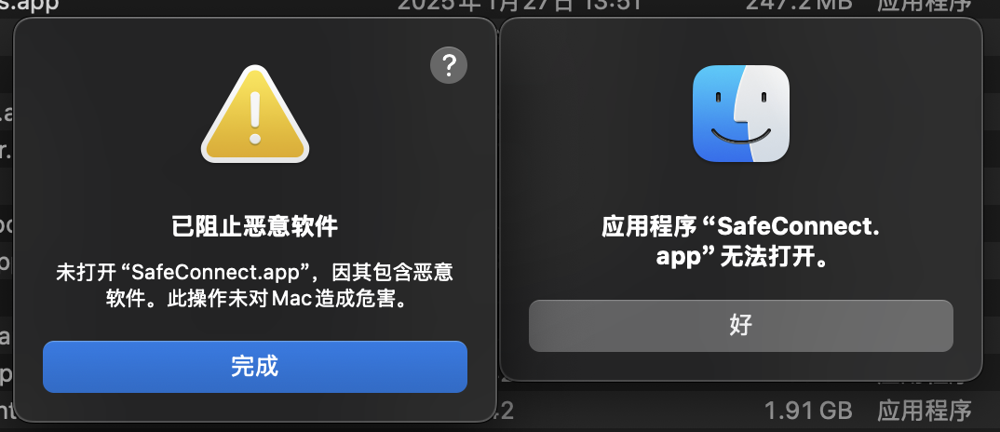
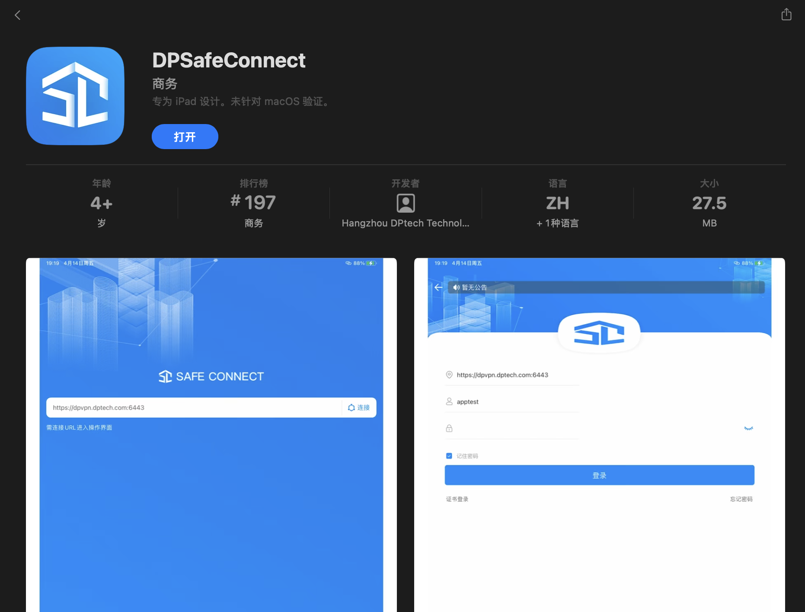
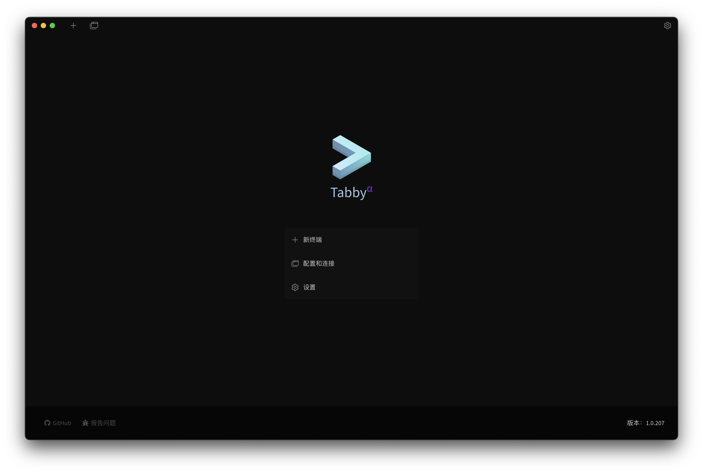

北极星的手册实在是太老旧了（当然也可能是我没拿到正经手册导致的.jpg），好多操作得自己摸索。之前一直想用我自己的MacBook登陆北极星但是一直卡在手册里给的SafeConnect下载链接下载得到的软件根本没法在我的系统（MacOS Sequoia 15.3.2）上运行这一步上。今天晚上花了些时间总算把这个问题解决了，为了备忘以及提供给可能存在的需要的人做参考，便在这里记录一下。
正式开始之前，首先假设读者已经准备好了VPN的账号和密码以及北极星堡垒机的账号和密码，同时已经完成了OTP令牌的设置。
SafeConnect软件无法打开问题
手册里和网站上提供的下载链接下载到的软件已经无法在我的系统上打开，运行时弹出如下提示：

恶意软件提示和无法打开提示采用多种方法（如修改系统设置为允许任意来源的程序安装、在简介页面勾选“覆盖恶意软件保护”等）均无法打开程序，即使没有恶意软件提示也仍然会提示应用程序无法打开。上网搜寻一通后发现似乎对软件重新签名可以解决这个问题，但是显然我不会.jpg，于是还是得找别的办法。
正在此时，我突然想到，按理这个程序的厂商应该不会只出一个版本就倒闭了，肯定还会有更新的版本，新版本应该是可以在我的电脑上运行的。于是我看了一下程序包的签名显示“dptech. All rights reserved.”，随即在网上搜索“dptech safeconnect”，发现果然有一个新版程序“DPSafeConnect”，但是似乎是个iPad应用程序，不过不重要，我们先下载下来看看。

软件商店页面下载之后发现是可以运行的，按提供的手册里填上VPN的地址https://162.105.160.15:6443以及已有的VPN账号和密码后果然可以连接上！现在再打开堡垒机页面https://10.100.1.88发现已经可以打开了。
本地终端配置
不过这样连接上的VPN不能像Windows上那样弹出北极星的Web操作页面，我也忘了这个东西的链接是多少，想到本地本来就有一个之前用天河二号的时候下载的Terminal软件Tabby（软件官网），于是开始考虑使用这个软件对北极星进行访问。
打开Tabby就可以看到“设置“的选项，打开设置后在左侧选择“配置与连接”，然后选择“新建”来新建一个配置。按照北极星手册中的步骤，选择“SSH连接”，名称可以随便填写，主机则填写10.100.1.88，端口号仍保持22不变，用户名则填写北极星堡垒机的登陆用户名即可。这里比较重要的一点是，身份验证需要选择“交互式”，否则后面没法输入动态口令。最后保存配置即可。

倘若VPN已经连接好，此时便可开始连接。在Tabby页面的顶部，点击加号右侧的“配置和连接”按钮（长得像标签页的那个按钮），选择刚刚新建的配置名称便可开始连接，然后就会在窗口底部弹出键盘交互认证的输入框，在其中先输入堡垒机的密码，然后空格之后加上OTP动态口令，回车之后即可连接成功了。
本质上来讲我觉得换个别的VPN软件也行，不过我还没试过，下次一定.jpg。如果有任何问题，欢迎向底部的邮箱发邮件和我交流🥺